石家庄 · 2026 年 10 月 30 日
展厅在河北省图书馆的一层，进门右转，灯光比走廊暗一档。玻璃柜一列一列排过去，里面是纸——发黄的纸、卷了边的纸、被塑封压平的纸。纸上是很小的铅字，和更小的手写字。
这是「铁流·丰碑」——纪念中国工农红军长征胜利九十周年主题文献展，七十余件展品，大多是从民间收藏者手里借来的旧书、旧报、旧手稿。它们不是文物级别的东西，纸张薄，印量也不大，有几本连封面都磨掉了角。但把它们按时间摆成一条线，那条线就慢慢立了起来。
我们习惯用数字讲长征：二万五千里，三百六十八天，翻越十八座大山，跨过二十四条大河。数字当然是真的，可数字也是最容易被念过去的东西。真正让人停下来的，是柜子里那些很小的证据：一本 1960 年出版的回忆录，定价几角钱；一张 1975 年的报纸，头版登着毛泽东 1936 年在陕北的照片；一页英文书，标题是「穿过大草地」，纸张已经脆得像饼干。
这篇报道想做的事很简单：沿着这间展厅的次序，把这七十余件纸片重新排成一条路，看看九十年前的那支队伍，究竟是怎样从南方的稻田走到北方的黄土坡的；也想看看，那些后来把它们写下来、印出来、拍下来的人，为什么觉得这件事值得反复讲。
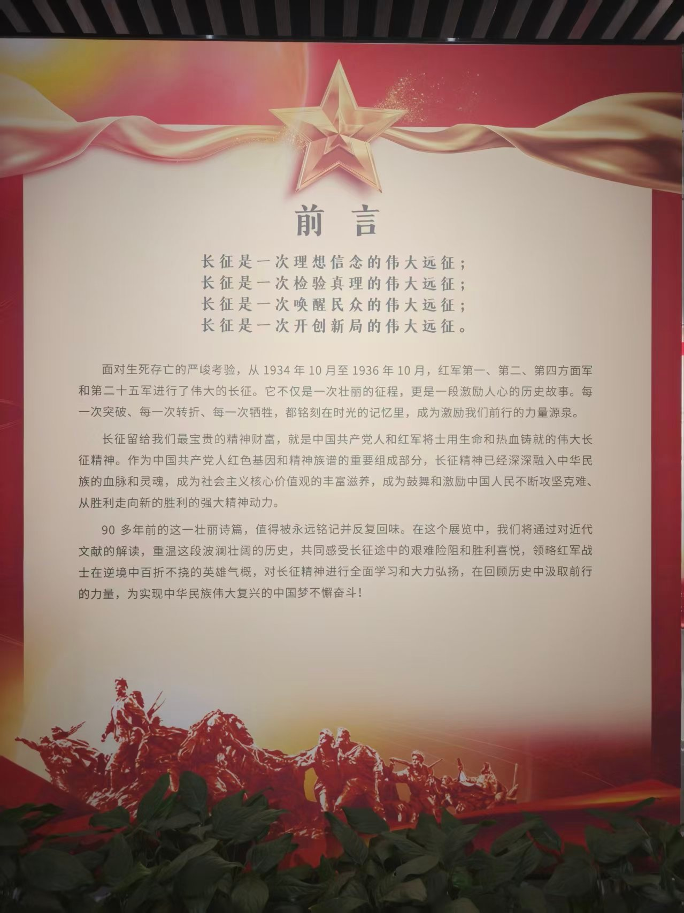
出发：于都河上的浮桥
1934 年 10 月 17 日夜里，江西于都河上架起了浮桥。木板铺在渔船上，天亮前拆掉，天黑后再架起来。连续几个晚上，八万六千余人从桥上走过，向西。
队伍里带着的东西，今天听起来不太像一支要突围的军队：印钞机、X 光机、兵工设备、成箱的文件。这些东西后来大多丢在了路上。出发的名义是「战略转移」，没有人对队伍说要走多远，也没有人知道要走两年。
留下来的人同样重要。一部分红军和游击队奉命留在南方八省，在之后的三年里失去了与中央的联系，在深山里面临清剿。他们的名字很少出现在长征的叙述里，但那条路的起点，是他们让出来的。
出发时的数字
- 八万六千余人：中央红军（红一方面军）出发时的大致兵力，另有相当数量的民工与挑夫随行。
- 三百六十八天：从于都出发到陕北吴起镇，中央红军在路上的时间。
- 十余省：队伍经过的省份数量，不同统计口径略有出入。
- 不到二十岁：许多战士的年龄。队伍里有大量十几岁的「红小鬼」，也有缠过足的女红军。
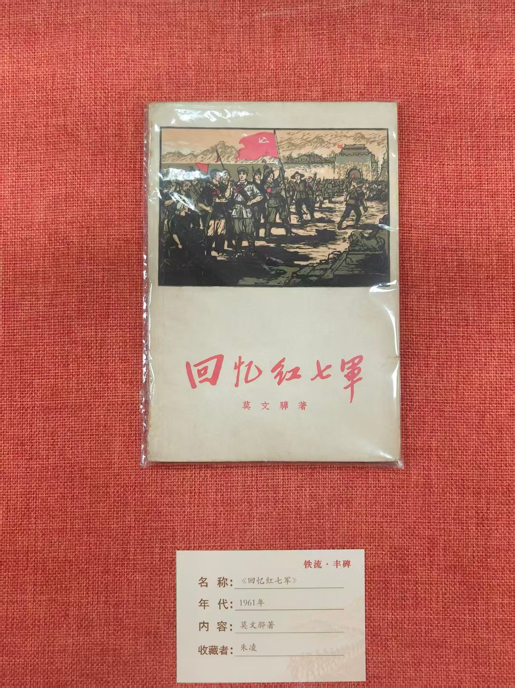
「他们出发的时候，没有人告诉他们要走多远。」
—— 展厅里的一位观众，在留言本上写下的话转折：湘江之后，遵义之前
长征最初的两个月，是一场不断缩小的行军。1934 年 11 月底到 12 月初，中央红军在湘江两岸与国民党军激战，掩护中央机关渡江。这一仗之后，出发时的八万六千人只剩下三万余人。
数字之外，是队伍里开始出现的疑问：这样走下去，要走到哪里去？湘江之后，通道、黎平、猴场，一连几个会议都在争论同一个问题——原定去湘西与红二、六军团会合的计划，还走得通吗？
1935 年 1 月 15 日至 17 日，中共中央政治局在遵义召开扩大会议。会议集中批评了此前军事指挥上的错误，改组了中央领导机构，此后，毛泽东在党中央和红军的领导地位逐步确立。对一支正在被围追堵截的队伍来说，这次会议改变的不只是路线，还有「谁来指挥」。
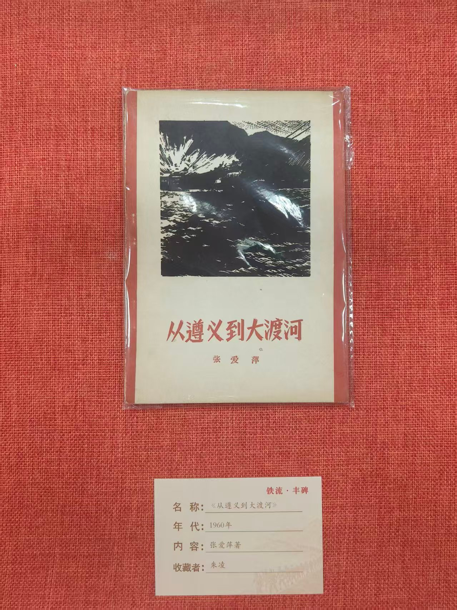
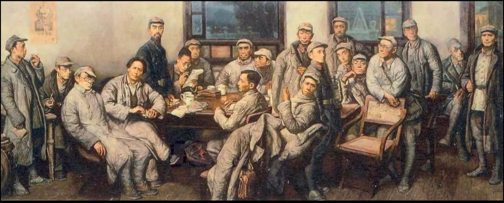
遵义会议
- 时间：1935 年 1 月 15 日至 17 日。
- 地点：贵州遵义老城子尹路，原国民党黔军师长柏辉章的宅邸。
- 要点：总结第五次反「围剿」失败和长征初期的教训，改组中央领导机构，取消「三人团」的最高军事指挥权。
- 意义：这是中国共产党第一次独立自主地解决自己的路线、方针和政策问题。
「一个会议能改变什么？
它改变的是一支队伍接下来往哪儿走。」
雪山草地：最难的一段路
1935 年 6 月，中央红军翻越夹金山。海拔四千多米，山上空气稀薄，天气说变就变。出发前，队伍要求每人准备一根木棍、一些辣椒和生姜；过山时不能坐下，坐下就可能再也起不来。
8 月，队伍进入松潘草地。那是一片看不到边的沼泽，草甸下面是黑水，踩偏一步就会陷下去。没有村庄，没有粮食，能吃的只有野菜、皮带和皮鞋。许多人是走着走着倒下去的，倒在草地上，连坟都留不下。
长征的伤亡，相当一部分不是发生在战斗里，而是发生在这样的路上：饥饿、寒冷、疾病、掉队。后来统计这场远征时，人们常用「减员」这个中性的词，但减掉的每一个，都是一个具体的人。
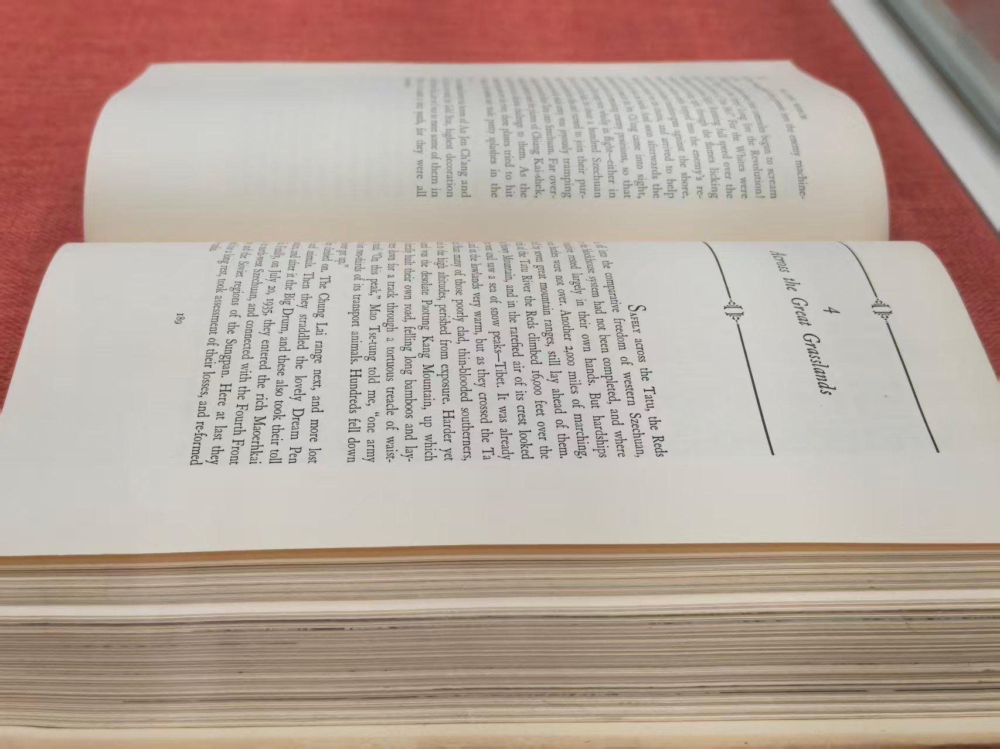
那条路上的自然障碍
- 十八座大山：其中五座终年积雪，夹金山是翻越的第一座。
- 二十四条大河：包括乌江、赤水河、金沙江、大渡河，多数没有桥，靠木船、竹筏和浮桥。
- 草地：松潘草地面积数万平方公里，海拔三千米以上，雨季积水，无路可循。
- 时间：中央红军过草地约七天七夜，一些部队走了更久。
「在草地上，最难的不是走路，
是知道往哪儿走。」
会师：1936 年 10 月
1935 年 10 月 19 日，中央红军到达陕北吴起镇。队伍只剩下不足一万人，很多人穿着单衣，脚上是草鞋。陕北的冬天已经来了。
一年之后，1936 年 10 月，红一、红二、红四方面军在甘肃会宁、静宁将台堡会师。三大主力会合，标志着长征结束。从于都河到会宁城，整整两年。
把这几段路画在一张图上，会看到一个很不规则的形状：先向西，再向北，又折向东，再向西。那不是规划出来的路线，那是被围、被堵、被追之后，一次次改出来的路。
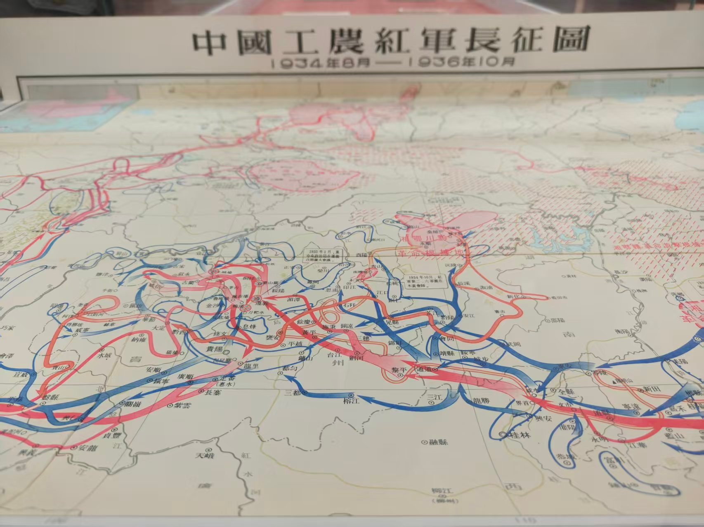
- 1934.10中央红军从江西于都出发，开始战略转移。
- 1934.11—12湘江战役，中央红军由八万六千余人减至三万余人。
- 1935.01遵义会议召开，改组中央领导机构。
- 1935.01—03四渡赤水，在川黔滇边反复穿插。
- 1935.05巧渡金沙江；强渡大渡河，飞夺泸定桥。
- 1935.06翻越夹金山，与红四方面军在懋功会师。
- 1935.08穿越松潘草地。
- 1935.10到达陕北吴起镇，中央红军长征结束。
- 1936.10红一、红二、红四方面军在会宁、将台堡会师。
约合 12,500 公里
中央红军在路上的天数
其中五座终年积雪
多数没有桥
数字取自公开史料中的常见说法，不同统计口径略有出入，仅作量级参考。
记录：他们第一次被看见
1936 年 6 月，美国记者埃德加·斯诺进入陕北保安。他在那里住了四个月，采访了毛泽东、周恩来、彭德怀，也采访了普通战士，记下了大量笔记。10 月，他离开陕北，带走的东西里有几卷胶片。
1937 年 1 月 25 日，美国《生活》（LIFE）杂志刊出这组照片，标题是「First Pictures of China's Roving Communists」——中国流动的共产党人的第一批照片。配文里写着：他的名字叫毛，悬赏二十五万美元要他的头。
同年 10 月，《红星照耀中国》在伦敦出版。这是外界第一次系统地读到长征：一支被围追堵截的军队，如何穿过半个中国。这本书后来在多个国家被翻译、再版，也影响了很多年轻人——他们中的一些人，后来去了延安。
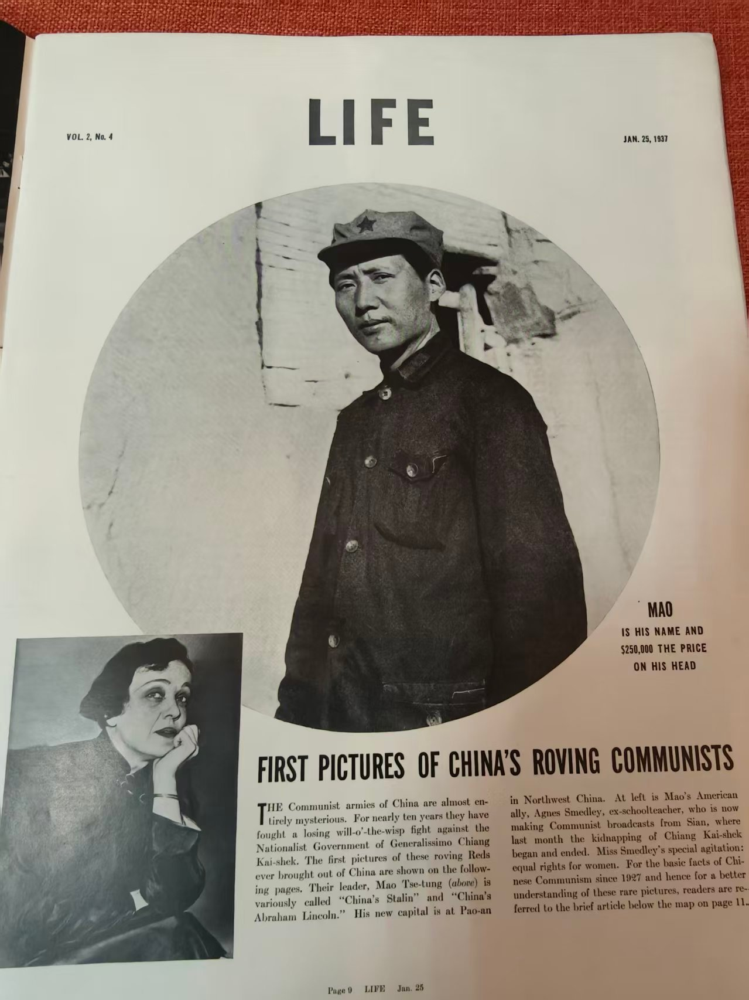
“First Pictures of China's Roving Communists.”
—— 《生活》杂志，1937 年 1 月 25 日记录者不止斯诺。艾格尼丝·史沫特莱、海伦·斯诺、艾泼斯坦，还有中国的记者、作家、画家，都在不同的时间写过这条路。他们写下的，不一定都是准确的，但正是这些彼此矛盾、彼此补充的文字，让九十年后的我们还能拼出一些细节。
从会师到开国：十三年
会师之后的十三年，是另一段历史：抗战、延安、解放战争。1949 年 10 月 1 日，毛泽东在天安门城楼上宣读公告，中华人民共和国成立。从于都出发算起，整整十五年；从会宁会师算起，十三年。
展厅里有一页旧书，印着那张开国大典的照片。照片下方的说明很朴素：几点、多少人、宣告了什么。它和展厅另一头的长征图之间，隔着几十米的走廊，也隔着十五年的路。
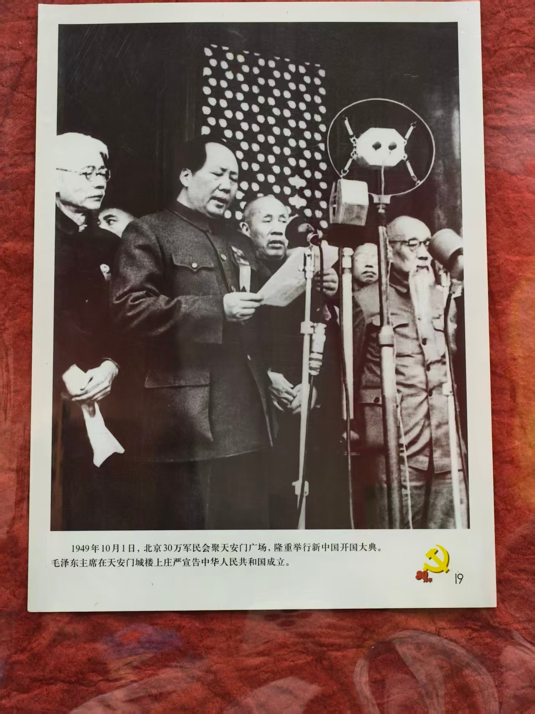
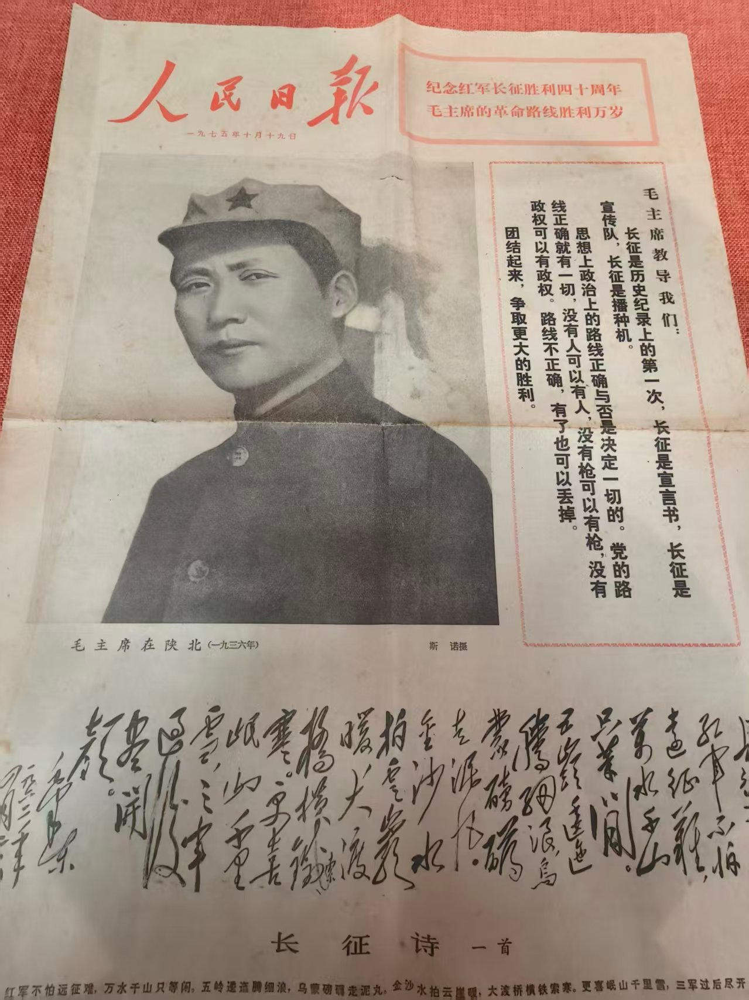
红军不怕远征难，万水千山只等闲。
—— 毛泽东《七律·长征》，1935 年 10 月展品：柜子里的细节
展厅里最打动人的，往往不是那些总结性的句子，而是一些很小的东西：一本书的定价、一张报纸的日期、一页手稿上涂改的痕迹。下面这些，是我们从七十余件展品里挑出来的几件。
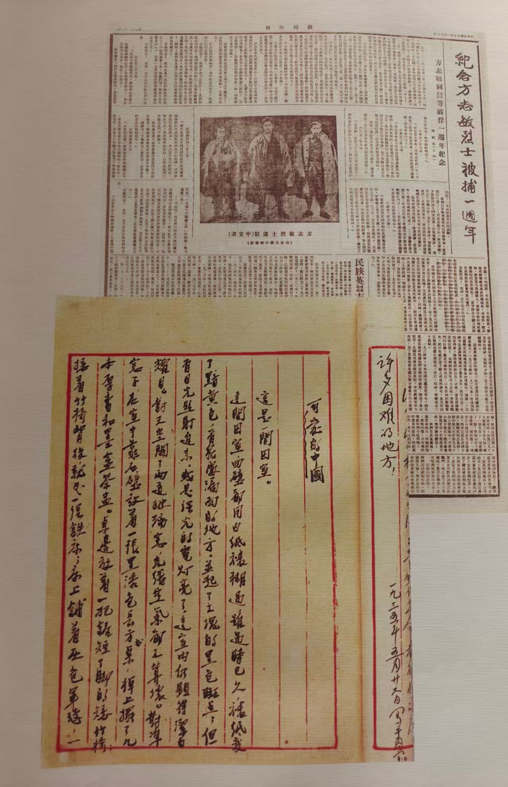
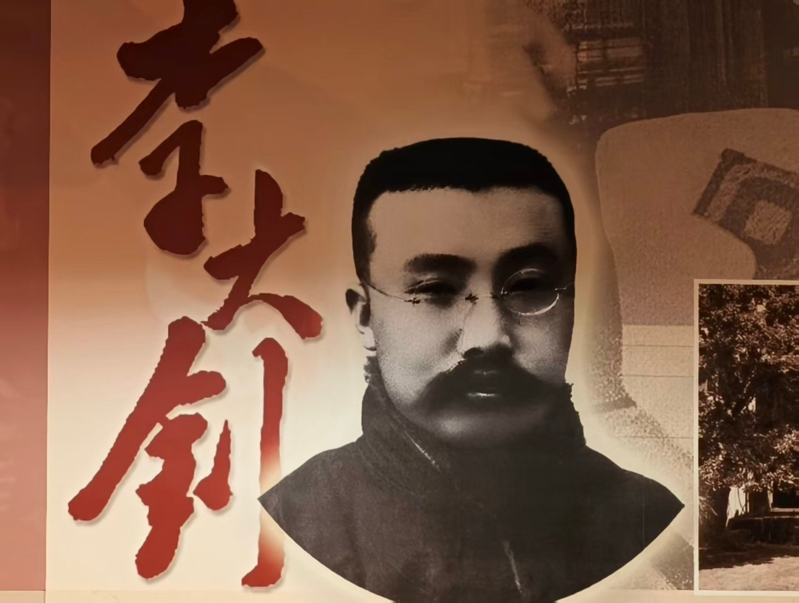
出展厅的时候，天已经黑了。走廊里有人在低声讨论刚才看到的那页手稿，也有人在拍展板上的二维码。
九十年前的那支队伍，平均年龄不到二十岁。他们中的大多数没有留下名字，也没有留下照片。他们走过的路，后来被画成图、写成书、拍成电影，被一代又一代人重新讲述。
我们这一代人不用翻雪山、过草地，但每一代人都有自己的难关要过，也都要回答同一个问题：在看不见终点的时候，还走不走下去。
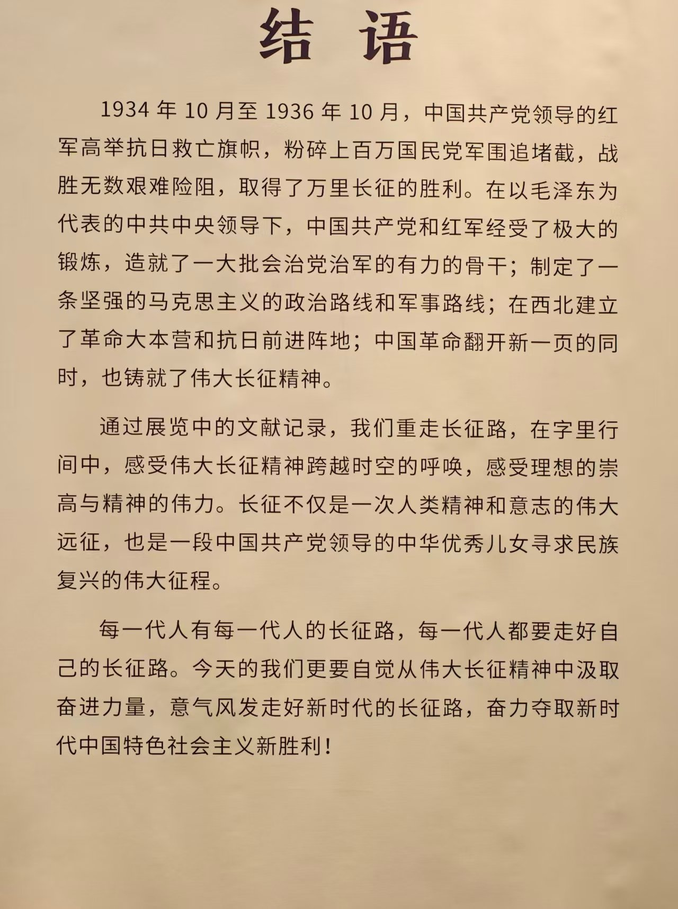
注释
- 本文所引展品信息，均来自「铁流·丰碑」——纪念中国工农红军长征胜利九十周年主题文献展（河北省图书馆·燕赵红色记忆馆，2026 年 10 月）的展签与展板说明。
- 中央红军出发兵力、湘江战役后减员数字、行程与天数等，采用公开史料中的常见口径；不同版本统计略有出入，文中已标注为「大致」「约」。
- 遵义会议的时间、地点与主要内容，依据展陈说明与公开党史资料整理。
- 斯诺 1936 年在陕北的采访时间、离开时间，以及《红星照耀中国》1937 年 10 月在伦敦出版，依据公开出版史资料。
- 《生活》杂志 1937 年 1 月 25 日的期号、页码与标题，据展品实物照片识读。
- 文中引用的观众留言与老红军回忆，为展陈说明中的转引，非本文作者直接采访。
参考与图片来源
- 展品实物照片：本文作者摄于「铁流·丰碑」主题文献展现场，2026 年 10 月 30 日。
- 《红星照耀中国》（Red Star Over China），埃德加·斯诺，1937 年。
- 《生活》（LIFE）杂志，1937 年 1 月 25 日，第 2 卷第 4 期。
- 《人民日报》，1975 年 10 月 19 日。
- 《从遵义到大渡河》，张爱萍，1960 年；《回忆红七军》，莫文骅，1961 年。